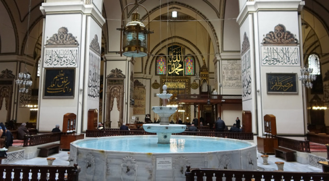

Bursa Ulu Cami, Orhan Gazi Parkı'nın bulunduğu geniş bir alana, Yıldırım Bayezid zamanında, 1396-1400 yılları arasında yapılmıştır. Osmanlı camileri arasında çok kubbeli anıtsal yapıların ilkidir. Ulu Cami’nin on iki büyük dört köşeli paye üzerine oturan 20 kubbesi bulunmaktadır. Yıldırım Bayezid’in 1396 Niğbolu zaferinden sonra Ulu Cami inşaatına başlanmıştır. Caminin inşaatı bittikten sonra ilk namazı aralarında Yıldırım Bayezid, Molla Fenari, Emir Sultan’ın da olduğu cemaate Somuncu Baba kıldırmıştır. Ulu Cami’nin ilk imamı, Mevlid’in yazarı Süleyman Çelebidir.

Caminin içinde kubbenin altında yer alan şadırvanın on altı köşeli havuzu ve üç çanaklı fıskiyesi vardır. Mimber kapısı üzerindeki kitabe, caminin bitiş tarihini 802 (1399-1400) yılları olarak göstermektedir. İki minaresi olan caminin batıdaki minaresi Yıldırım Beyazid zamanında, doğudaki minaresi ise Çelebi Sultan Mehmed tarafından yaptırılmıştır.
Timur istilasında tahrip edilen cami, bu yıllarda tamir edilmiş, en büyük onarımı ise 1855 depreminden sonra yapılmıştır.Yapılış tarzı açısından Osmanlı mimarisinde özgün bir yapı olan Ulu Camii, 55 x 69 metre ölçülerinde, dikdörtgen planlı bir yapıdır. Toplam iç alanı 3.165 metrekaredir. Türkiye’deki Ulu Camilerin en büyüğüdür. On iki ayak üzerine yirmi kubbe ile üzeri örtülmüş olan caminin ortasındaki kubbenin üstü açıktır. Son yıllarda bu açıklık camla kaplanmıştır. Duvarları tümüyle düzgün kesme taş ile örülmüştür.